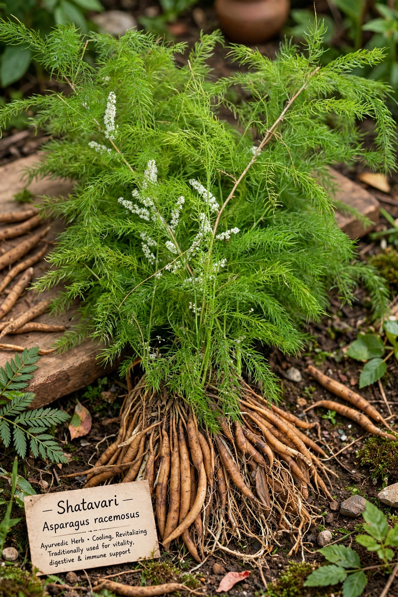

शतावरी (Shatavari) – पूरी जानकारी

शतावरी (Asparagus racemosus) आयुर्वेद की "महिलाओं की सबसे अच्छी दवा" मानी जाती है। यह महिलाओं के स्वास्थ्य, हार्मोन संतुलन और स्तनपान के लिए बहुत फायदेमंद है।
🌿 मुख्य लाभ
- महिला स्वास्थ्य: हार्मोन संतुलन, मासिक धर्म में सुधार
- स्तनपान: दूध की मात्रा बढ़ाता है
- प्रजनन क्षमता: पुरुष और महिला दोनों में
- पाचन: पेट की समस्याओं में राहत
- इम्यूनिटी: रोग प्रतिरोधक क्षमता बढ़ाता है
💊 उपयोग की विधि
- चूर्ण: 2-3 ग्राम दूध के साथ (दिन में 2 बार)
- कैप्सूल: 500-1000 मिलीग्राम (डॉक्टर की सलाह अनुसार)
- काढ़ा: शतावरी जड़ को पानी में उबालकर
⚠️ सावधानियाँ
- गर्भवती महिलाएँ बिना डॉक्टर की सलाह के न लें
- ज्यादा मात्रा में लेने से पेट खराब हो सकता है
- हमेशा योग्य चिकित्सक की सलाह लें
← सभी औषधियाँ